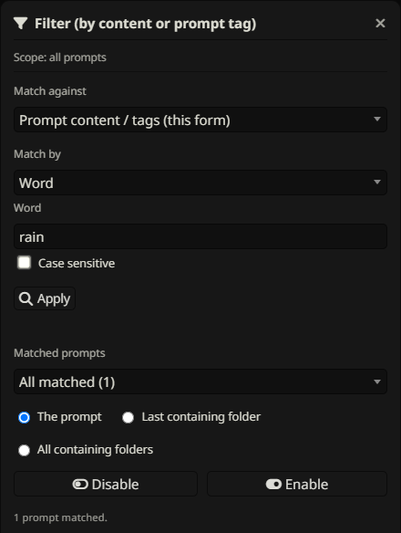
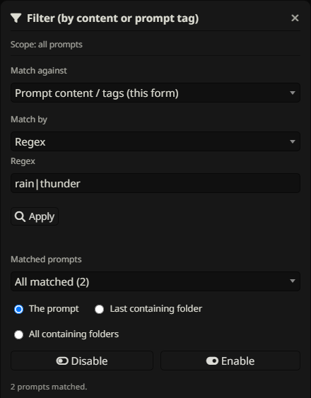
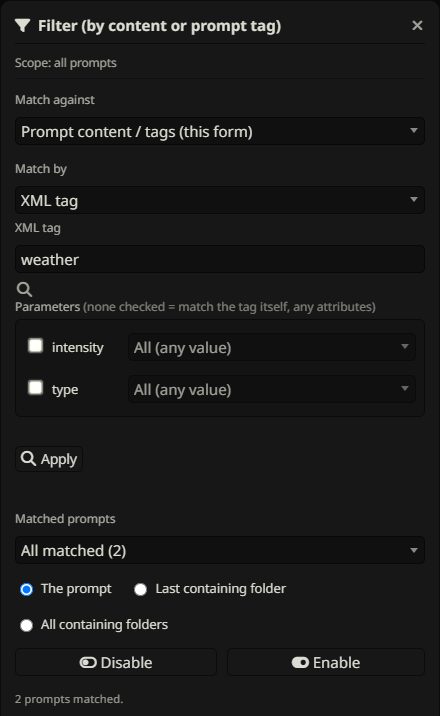
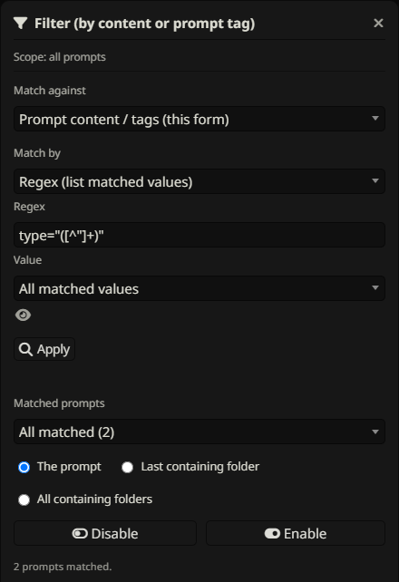
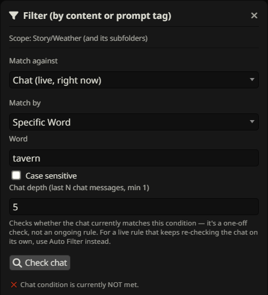
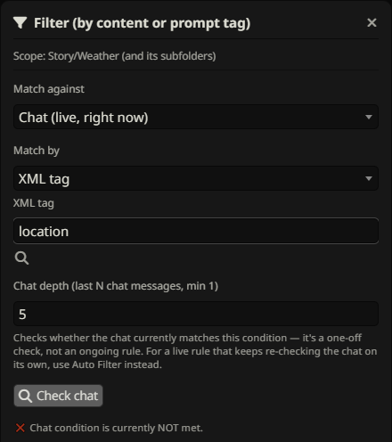
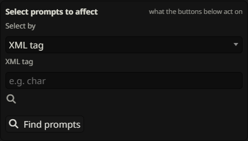

Manual Filter
Find prompts by content or metadata, inspect matches, and choose exactly what to enable or disable. Applying a search alone does not change prompt states.
Open, match, inspect, then act


- Click the toolbar Filter funnel for all active prompts, or a folder’s ⋮ → Filter this folder by content… for its subtree.
- Keep Match against set to prompt content/tags. Select Match by and enter a criterion.
- Click Apply to scan. It finds matches without changing their state.
- In Matched prompts, keep All matched or select one named prompt.
- Choose The prompt, Last containing folder, or All containing folders.
- Click Enable or Disable.
Example: tag Rain ambience as Weather, match Prompt tag = Weather, choose The prompt, then Enable. If no prompts match, refine the criterion; you can still save a valid preset for future matching prompts.
Global & folder-scoped matching

Toolbar Filter starts with all live prompts in the active native list. Opening Filter from a folder limits the initial scan to that folder and descendants. Manual funnel exclusions remove prompts from the eligible scan. Folder-scoped presets retain their saved scope.
Scope limits which prompts can match; it does not necessarily limit a folder action. All containing folders can affect an ancestor outside the starting subtree, including that ancestor’s nonmatching siblings. Choose The prompt when you only want the matching prompts changed.
Word matching & case sensitivity
Choose Word and enter text found inside prompt content. This is a substring search, not a whole-word search. It ignores case unless Case sensitive is checked. It does not search the prompt name.
For example, rain matches “Rain falls” and “rainfall”. For whole words, choose Regex and use \brain\b. Use a distinctive phrase when you want to avoid incidental matches.
Regex matching


Choose Regex and enter a JavaScript regular expression without surrounding slash delimiters, for example \b(rain|storm)\b. Regex matching is case-insensitive; there is no separate flags field. Invalid expressions show an error instead of applying an action.
Use rain.*roof for rain followed by roof on the same line, or rain[\s\S]*roof across line breaks. Apply and inspect the results before enabling/disabling, especially for broad patterns.
XML tags & parameters


- Choose XML tag and enter a plain tag name such as
char, without angle brackets. - Use the scan/magnifier control, Enter, or leave the tag field to discover parameters and values in eligible prompts.
- Leave every parameter unchecked to match any occurrence of that tag.
- Check a parameter and choose All to require that attribute with any value, or select a specific value.
- Check additional parameters to require them all on the same occurrence of the tag, then Apply.
<char name="Mira" role="healer">...</char>
<char name="Mira" role="guard" />Select name=Mira and role=healer to match the first occurrence. Parameters split across different occurrences do not satisfy the combination. Opening and self-closing tags are supported, with single- or double-quoted attribute values. Tag names ignore case and match a complete name (char does not match character); attribute names are case-sensitive and specific values compare case-insensitively.
Regex: list matched values


Regex (list matched values) first scans the prompt scope for distinct values. It uses the first capture group when present, otherwise the full regex match. Values are trimmed and listed in a dropdown. Apply a pattern such as region="([^"]+)", then choose North instead of All matched values.
The eye beside the value opens its full text, useful when the dropdown truncates a long value. Choosing All uses the original regex; choosing a specific value performs a case-insensitive substring check against the cached prompt content. Thus North can also select a prompt containing Northern. It is not an exact XML-attribute comparison.
The dropdown reuses the scan cache. After editing prompts, click Apply again to refresh it. Saved presets rescan current content when run. This mode is available in manual Filter and its Chat effect picker, not the Auto Filter effect picker.
Prompt tag matching

Choose Prompt tag and enter one complete tag name. Leading/trailing whitespace is removed and case is ignored. Fantasy matches a Fantasy tag, but not High Fantasy. It matches saved STPHE tag metadata, not XML or words inside content.
A prompt can have multiple tags; matching any one equal to the query is sufficient. This criterion has no multi-tag AND/OR input. Add or remove tags through the native edit form, save, then apply again.
Prompt & containing-folder targets
| Target | What changes |
|---|---|
| The prompt | The individual intended state of each chosen matched prompt. |
| Last containing folder | The immediate containing folder’s master mute/restore state. |
| All containing folders | The containing ancestor folders’ master states. |
Folder actions affect all their descendants, including nonmatches and excluded siblings. They use master mute/restore, not Force Enable/Disable ALL; enabling a folder preserves individual off states. Enabling a prompt or its immediate folder cannot bypass a different muted ancestor.
Choose one item from Matched prompts to act on its target only, or All matched for the whole result set. Repeated folder targets are consolidated.
Manual filter exclusions

Click a prompt’s or folder’s funnel exclusion control before running Filter to keep it out of manual matching and saved presets. Excluded folders protect their descendants from direct selection by those workflows. The separate wand controls Auto Filter exclusion.
Folder master toggles still affect all descendants, including excluded ones. For example, excluding Core from matching does not protect it from an action that mutes its enclosing Shared folder through another matched prompt. For strict per-prompt changes, use The prompt as the target.
Check recent chat manually


Set Match against to Chat. Choose a condition (Word, Regex, or XML-based values), set the number of recent messages to inspect, and click Check chat. The depth is at least one message in this manual dialog. Each user or assistant message counts individually; it is not a count of conversation pairs.
The result says whether the condition is currently met. This check is informational: it does not gate the manual Enable/Disable buttons or a Chat preset’s action. If you want automatic conditional behavior, use Auto Filter.
XML-derived values in chat


A Chat XML condition uses XML attributes found in prompts as a vocabulary to look for in ordinary chat text. It does not require literal XML in the chat. For example, <char name="Mira" role="healer"> supplies Mira and healer.
No checked parameters means any known attribute value can trigger. A checked parameter with All accepts any known value for that attribute; a specific value requires that value. Multiple checked parameter groups must all be satisfied within the recent-message window and can be found in different messages. The condition’s vocabulary scan uses prompts eligible for Auto Filter, including its wand exclusions, even in this manual Chat check.
Choose what a Chat action affects


The Select prompts to affect area is independent of the chat condition. Choose matching by XML, Word, Regex, Regex (list matched values), or Prompt tag and click Find prompts; alternatively choose prompts and folders manually from the selection tree.
For matched effects, inspect Matched prompts and choose a prompt/folder target before Enable/Disable. Manually chosen prompts change directly, and chosen folders use master mute/restore. The eligible selection respects manual exclusions. You can save the condition and effect as a Chat filter preset.
Save a reusable action

Enter a preset name and save the current criterion, scope and target. You do not need a successful Apply or a current match to save a valid criterion. Save from prompt content/tags for a Filter preset, or from Chat for a Chat filter preset with its independent effect.
A preset runs a fresh search each time you press its Enable/Disable button. It does not automatically run just because it exists. See Filter presets for locks, groups, individual export and collection imports.